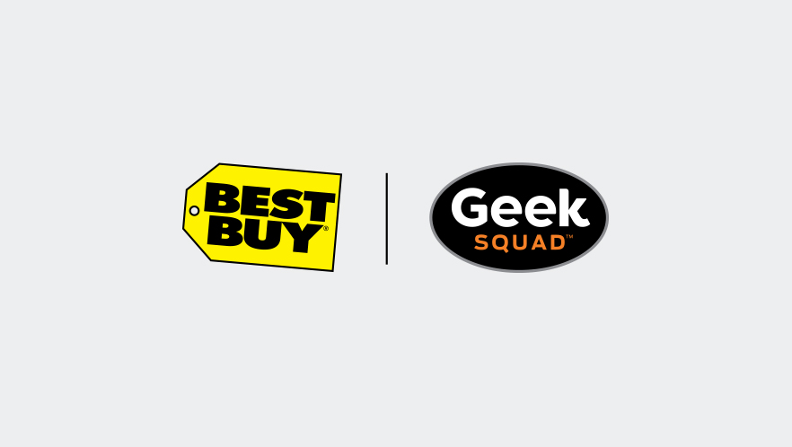

Rosemarie Noonan Resume Site
Work Experience
Cloud Support Engineer Intern, Amazon Web Services (AWS) June 2021 - August 2021
My current job is an internship at AWS located in Dallas-Fortworth Texas. At the time of writing this we are working on our final project, which is hosting a three-tiered archictecture with a combination of static pages,
and pages that are directly interacting with a series of databases in the event of a world disaster. The pages involve databases with news bulletins, inventory, orders, requests, and logging. This project is being developed by my team of
5 interns.
Skills I have developed thus far in the internship include the troubleshooting of various AWS services and infrastructure, comprising of:
S3: CloudFront, batch operations, creation and troubleshooting of buckets
Security: Key Management Services (KMS), IAM users, AWS Certificate Managers
EC2 Services: EBS volume types, EBS snapshots
Linux: Managing users, groups, file systems, and processes
Networking services: VPC, Route53, Domain Name Transfer, VPN, CloudWatch, ELB architecture, and OSI model (including layers 2, 3, and 4 configuration and troubleshooting)
Safety Sweep & Package Handler, United Parcel Service (UPS) August 2019 - May 2021
During my time at UPS, I obtained the role of Safety Sweep after an accident at the workplace that rendered me a trip to the clinic. A set of rollers was dropped and rolled over
my finger causing me to almost lose my middle finger on my right hand and took months of recovery, and wearing a splint. After the tragic incident, I inspired and decided from that day on, to become a
safety advocate about the dangers of the workplace. As a safety sweep my primary roles included educating my fellow coworkers on the best safety practices, and encouraging them
on why following them was so important. Another part of the job was encouraging teamwork and providing such to any worker in need. The role itself also included safety board meetings where injury
metrics were reviewed and monthly safety topics were discussed and were often followed by audits of equipment upkeep and safety in designated areas. The result was fostering a safety-conscious
work environment in both the physical area and in each coworker’s mindset.
As a package handler at UPS, work conditions were very hectic, noisy, and face-paced. The result of working in such an environment helped me adapt skills of teamwork, working under stressful and
face-paced work conditions, multitasking, and communication.

Consultation Agent, Geek Squad/Best Buy October 2018 - November 2019
Best Buy was my first job in the technology field. Through my time at Best Buy I adopted the skills of explaining complex technology in a comprehensible context for my clients. The
role also taught me teamwork, patience,and the best practices for customer service traits. As a consultation agent included diagnosing customer devices
which mainly consisted of hardware and software issues on personal computers, mobile phones, and printers. My diagnosis skills were from both personal experience and industry troubleshooting tools.
The diversity of customers also taught me sales techniques, that came from understanding what the customers needed and making all my decisions based on person-to-person conversations on what each
customer would need, and not overselling them things they would find incompatible with their different lifestyles.